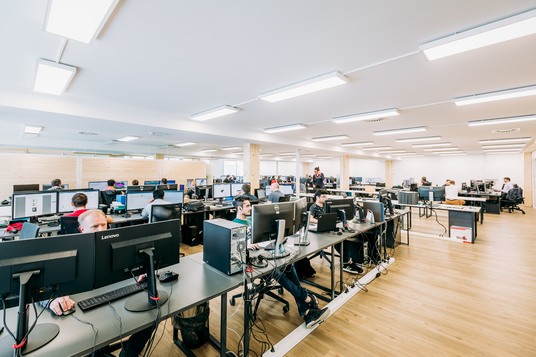
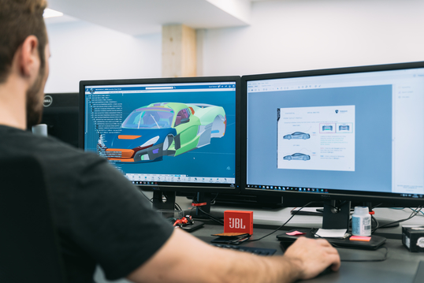
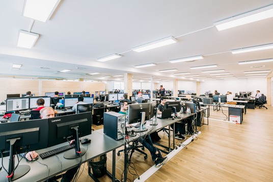
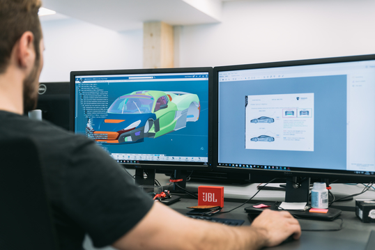

Generalni sponzor
Rimac Automobili
Osnovano 2009. godine sa sjedištem u Hrvatskoj, Rimac Automobili je tehnološko i proizvodno poduzeće koje razvija i proizvodi električna vozila visokih performansi i omogućuje inovativna tehnološka rješenja globalnim proizvođačima automobila. Temeljen na viziji osnivača i izvršnog direktora Mate Rimca, poduzeće je započelo kao projekt u garaži s idejom stvaranja najbržeg električnog automobila na svijetu. Prvi automobil takve vrste, Concept_One, bio je gotovo u cijelosti proizveden u Hrvatskoj u ograničenoj seriji, a predstavljen je 2011. godine. Stručnost u specifičnoj grani automobilske industrije danas ih postavlja kao ključnog dobavljača tehnologije i sustava elektrifikacije mnogim industrijskim partnerima, uključujući Porsche, Aston Martin, Koenigsegg, Renault, CUPRA i od sada, Automobili Pininfarina. Čitav razvoj i proizvodnja tehnologije i automobila je u umovima i rukama tima koji danas broji gotovo 500 zaposlenika i 26 nacionalnosti s lokacijama u Svetoj Nedelji, Splitu i Osijeku te Kini.